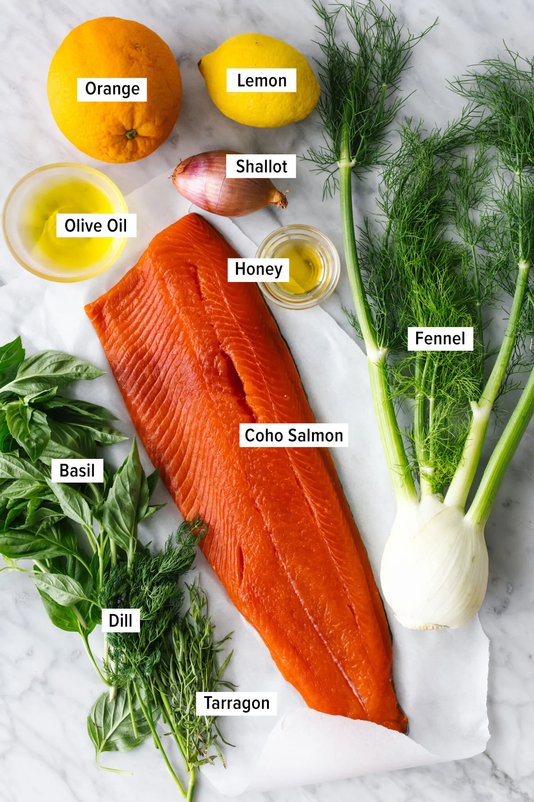
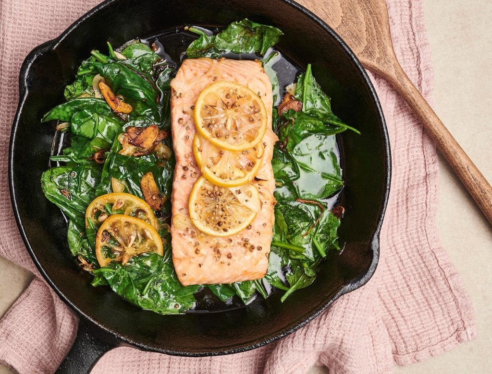
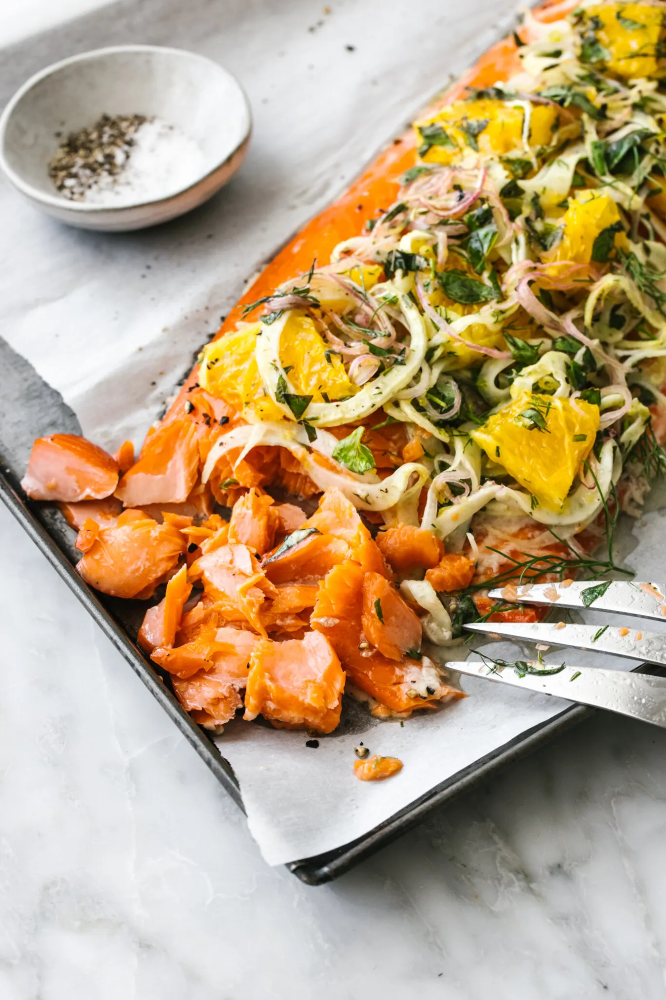

Slow Roasted Salmon with Fennel and Orange
This slow roasted salmon is what a simple, summer dinner is all about! It’s incredibly tender and topped with fennel, juicy oranges, and loads of fresh herbs.
Before we dive in to the recipe. Lets look at some interesting facts about salmon
- Salmon love both salt water and freshwater.
- After living for many years at sea, salmon travel a long distance home to return to the river in which they were born to spawn
- Salmon change colour!
- Six different species of salmon live in Canada
Enough with the facts. Lets begin our journey of cooking some deliciously roasted salmon.

Lets list out the ingredients first.
- Whole Salmon: I’m using a whole Coho salmon piece, but Sockeye or King salmon are great options as well.
- Orange: Adds a layer of juicy, citrus flavor, with a pop of color.
-
Fennel: Thinly sliced fennel adds a fresh, crisp bite. And if you’ve got leftovers, toss it into a fennel salad!
-
Shallots: Mild shallots provide a hint of oniony, garlicky flavor.
-
Lemon, Honey & Olive Oil: A sweet and bright simple dressing for the fennel orange topping.
-
Fresh Herbs: I’m using basil, tarragon, and dill, but feel free to use any tender green herbs such as parsley, mint or chives as well.
Thats all the ingredients we need.
Lets start roasting them.. Real slowww...!

This salmon recipe is a cinch to make once you’ve got a few things prepped. But first, preheat the oven to 200°F (93°C), and set a rack in the middle of the oven. Then follow along below!
-
Brush the salmon with oil. Place the salmon on a parchment-lined baking sheet (skin side down), then brush the top with just ½ tablespoon olive oil.
- Prep the orange. Slice the orange in half and juice one half, then peel the other half and thinly slice the fruit into half moons.
- Make the fennel topping. In a medium bowl, toss together the remaining olive oil, sliced fennel, orange slices and juice, shallot, lemon zest and juice, honey, herbs, salt, and pepper.
-
It’s slow roasting time! Top the salmon with the orange fennel mixture. Then roast the salmon for 30 to 45 minutes, depending on the thickness of the fish and how “done” you like it. But be sure to check the recipe card for extra roasting notes!
-
Ready to serve. Remove the salmon from the oven, serve it straight from the sheet pan and scoop any extra pan juices on top.
